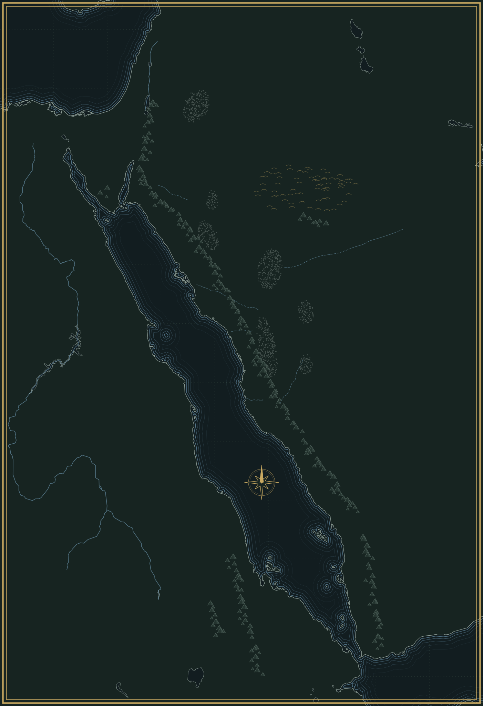

List
Next prayer
Asr
3:15 PM · in 45 minutes
Names of Allah
The list and Quran references
Mushaf
Read by page and surah
My Quran
Marks, highlights and notes
Today
Hijri calendar
Jumada I 22, 1448
Crescent
Moon sighting
Conjunction 7 hours ago
Morning azkar
12 of 24
Duas
Quran, Sunnah and yours

Seerah
على الخريطة والخط الزمني
Hadith
Collections and books
Khatma
Today 12 of 30
Home
Mushaf
My Quran
Listen
List